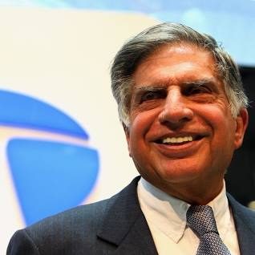

Ratan Naval Tata
"None can destroy iron , but its rust can . Likewise , none can destroy a person , but his own mindset can"
Bio : -
Ratan Tata, in full Ratan Naval Tata, (born December 28, 1937, Bombay [now Mumbai], India), Indian businessman who became chairman (1991–2012 and 2016–17) of the Tata Group, a Mumbai-based conglomerate.
Early life : -
A member of a prominent family of Indian industrialists and philanthropists (see Tata family), he was educated at Cornell University, Ithaca, New York, where he earned a B.S. (1962) in architecture before returning to work in India. He gained experience in a number of Tata Group businesses and was named director in charge (1971) of one of them, the National Radio and Electronics Co. He became chairman of Tata Industries a decade later and in 1991 succeeded his uncle, J.R.D. Tata, as chairman of the Tata Group.
Career : -
- Ratan Naval Tata with his team leads to acquiring international exposure and a reputation for his business as Chairman of the Tata Group. Under his leadership, the firm also grew into a multinational company by purchasing companies such as Jaguar, Tetley, Land Rover, and Corus. The Tata Group was listed on the New York Stock Exchange due to its remarkable business success.
- He was a key figure in developing the Tata Nano and Tata Indica We can understand his dedication to the work that he tried to do even for the common people, as he introduced TATA NANO so that it could be affordable to most households.
- The Tata Education and Development Trust, a charitable component of the Tata Group, has established a $28 million Tata Fundraising Campaign, which will enable Cornell University to offer financial help to Indian undergrads.
- The Tata Trusts, led by Ratan Tata, gave a gift of 750 million to the Indian Institute of Science's Centre for Neuroscience to explore the factors that cause Alzheimer's disease.
List of Companies Owned by Ratan Tata's TATA : -
Net Worth : -
Mr. Ratan Tata's net worth is one billion dollars or around 7416 crore rupees in Indian currency.Even though Ratan Tata is not included in the list of billionaires because charity organizations control 65 percent of TATA Sons, which is also the holding company for the other 96 TATA Group subsidiaries companies
Awards & Achievements : -
-
He was given the Padma Bhushan, India's third-highest civilian honor, in 2000.
-
He received an Honorary Fellowship from the London School of Economics and Political Science in 2007.
-
In 2008, he received the 'Padma Vibhusan,' India's second-highest civilian honorary title.
-
In 2009, the Government of Italy presented upon him the title of "Grand Officer" of the Order of Merit of the Italian Republic..
-
The Business for Peace Foundation's 'Oslo Business for Peace Award' was awarded in 2010.